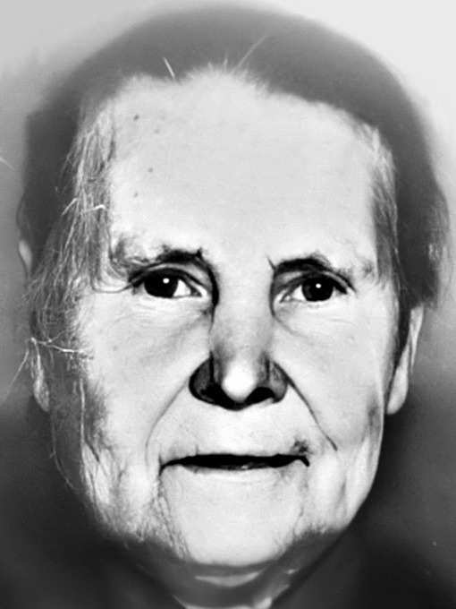

Ольга Дмитриевна Федосова (Денисова)

Девичьи фамилии — Денисова и Тихонова. Родилась 24 июля 1890 г. в с. Абакумово Пронского уезда Рязанской губернии (ныне Рязанская обл.) и была одной из старших детей в семье. Её отец — Дмитрий Калинникович — был родом из того же села Абакумова, а мать — Мария Варфоломеевна — родилась в селе Чулково по соседству. Родное село Ольги было довольно большим. В те годы в нём проживало около 800 человек.
Осенью 1909 г., когда Ольге было 19 лет, её выдали замуж за Александра Никаноровича Федосова, и после свадьбы невеста перебралась к нему в соседнюю деревню Гагинские Выселки. В течение следующих двадцати лет Ольга Дмитриевна родила мужу не менее шести детей. Родители дали им следующие имена: Мария (в замужестве Мамызина, 1911–1980), Иван* (1913–1944), Клавдия (в замужестве Пальгуева, 1919–2019), Николай (1921–1987), Александр (1928–1993) и Лидия (1932–1947).
С приходом советской власти и началом коллективизации жизнь на селе стала очень тяжёлой, и семья Ольги Дмитриевны отправилась в поисках лучшей жизни в столицу. Там они остались насовсем.
Когда же разразилась война, семью постигли новые испытания. Первенец Ольги Дмитриевны, Иван Александрович, который до войны трудился закройщиком на одной из московских обувных фабрик, был призван на фронт, и с войны уже не вернулся, так как летом 1944 г. погиб в Белоруссии. У него осталась жена и пятилетний сын Анатолий. Что же касается среднего сына, Николая Александровича, то он был призван на службу в армию ещё до начала войны, а затем был отправлен на передовую, но, к счастью, остался жив. Домой он вернулся лишь спустя пять лет после призыва.
Однако и на этом несчастья в доме Федосовых не закончились. Всего через два года после окончания войны трагически погибла младшая дочь Ольги Дмитриевны — Лидия. В 15-летнем возрасте она утонула в детском лагере, спасая ребёнка из водоворота.
Другие дети Ольги Дмитриевны продолжили жить в Москве. Дочери Мария и Клавдия вышли замуж, имели детей и прожили насыщенную жизнь. При этом Клавдия Александровна, у которой было звание ветерана войны, стала единственной в семье долгожительницей и умерла в 2019 г. в возрасте примерно 100 лет. Сыновья Ольги Дмитриевны также создали свои семьи. Николай работал на московском заводе «Искра» и стал неплохим рационализатором. Трудился на заводе и младший сын, Александр.
В 1952 г. не стало мужа Ольги Дмитриевны, Александра Никаноровича, с которым они прожили 42 года. Сама же Ольга Дмитриевна умерла 18 сентября 1968 г. в возрасте 78 лет в Москве и была похоронена рядом с мужем на Даниловском кладбище.